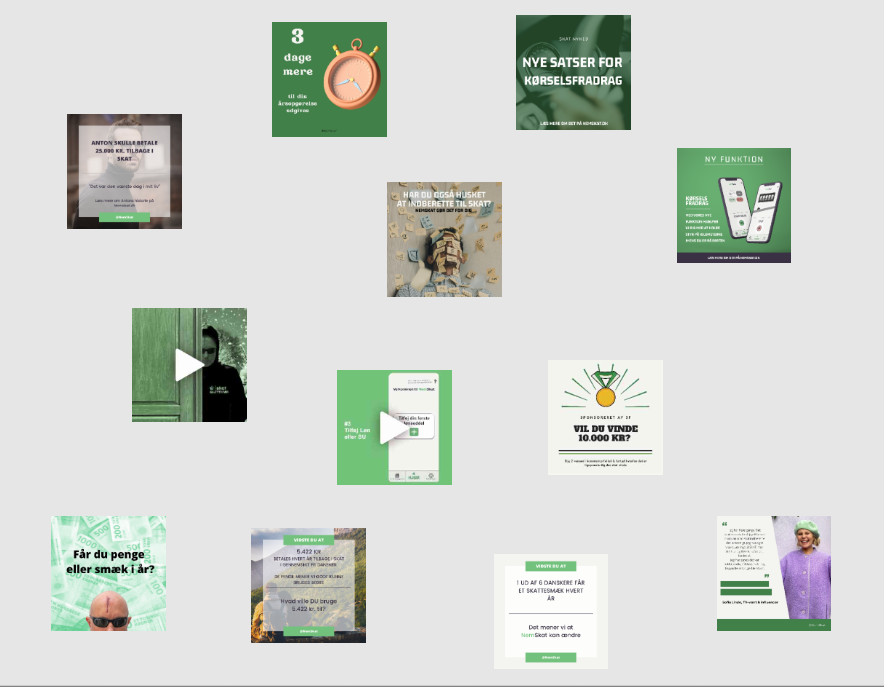

Dette projekt drejede sig om, at udvikle en relevant content strategi for NemSkat
Min rolle i dette projekt var at udforme content, finde ind til fimaets why og udforme en indholdsplan.
Til dette lavede vi en indholsstrategi, som jeg vil forklare herunder.
Vi startede med at bruge modellen: Den Gyldne Cirkel og finde frem til vvores formål (why). Når man først har sit why, kan man begynde at arbejde ud af og finde ud af sit how. Hvordan vi skal skille os ud fra vores konkurrenterns særlige
tilgang hvordan man så skal formidle sit budskab. Til sidst kan man så koncentrere sig om at formidle sit what. Altså selve produktet.
Budskab:
Nem Skat er et automatiseret bogholderi, som gør det nemt for dig at udfylde din årsopgørelse hurtigt - og sikrer dig mod skattesmæk.
Slogan:
NemSkat, det behøver ikke at være så svært.
Vision (why):
Give folk kontrol over deres økonomi. Slip for ubehagelige overraskelser.
Vores primære formål med vores content er at vise unge mennesker, hvor vigtigt det er at tage hånd om deres økonomi. Da dette emne er alt for tungt til mange unge mennesker, så har vi valgt at køre en Kat Kat Køb strategi.
Vi har derfor konkurrencer, personlige historier, samt samarbejde med influencere for at skabe indhold der kan underholde og interessere vores unge målgruppe. Vi har også opfundet karakteren Skattefar, for at gøre emnet sjovt og få folk
til at dele vores opslag udelukkende for underholdningsværdien.
Vores “Køb” del er det indhold, hvor vi informerer om de forskellige tidspunkter i vores årshjul, hvor det er relevant, at folk tænker på at få styr på deres opgørelse eller bare generelt informere om vores app.
Udover dette har vi valgt at der skal være en rød tråd m.h.t. farver og former i vores opslag, så det passer med temaet i appen. Dette gør vi for at styrke vores brand rekognition.
Vi laver 3 posts om ugen, idet vi ønsker at holde os relevante for algoritmen men samtidig ikke poste for tit.
Vores strategi med at putte informativt indhold ind mellem mere underholdende gør også at vi ikke kan poste mere indhold da vores brugere ville blive trætte af for mange informationer.
Vi holder os fra søndag, da analyser har vist os, at det er den dårligste dag på ugen at lægge ting op.
Når det kommer til indberetning af skat, så er et årshjul i den grad relevant og vi planlægger at poste reminders når det er relevant. Vi har også tænkt at benytte os mærkedage som halloween og højtider til at lave underholdnings indhold
med skattefar.
For at kunne lave strømlinet content gjorde vi brug af et digitalt whiteboard i form a værktøjet miro.com. Her kunne alle fra gruppen lægge deres content forslag op, og se, om det passede til resten af indholdet
